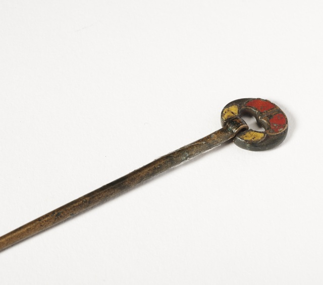

Budapest Chainbridge
Budapest Chainbridge
A historic bridge connecting Buda and Pest.
 Two girls, wearing cempaka flowers in their hair
Two girls, wearing cempaka flowers in their hair
A snapshot from the past with traditional floral adornments.
 Three red-figure attic vases
Three red-figure attic vases
Classic ancient Greek pottery showcasing exquisite craftsmanship.

Bronze Enamel Ring Pin
An intricate piece used to fasten cloaks, adorned with vibrant enamel.
![Jean-Maxime Claude had a long career behind him when he painted these three riders on the beach in 1882. With their backs turned to us, they regard the sunset over the sea in a tranquil, quiet moment. The painting was bought by the Swedish collector Oskar Filip Heilborn. His collection, which was donated to the Nationalmuseum in 1902, is representative of the Swedish fondness for French art at the time. It includes older realist works and more contemporary paintings, but not one single Impressionist.](imgs/10.jpeg) Oilpainting of Ettingen Village
Oilpainting of Ettingen Village
A serene depiction of three riders at sunset.
 Fashion artist Riitta Immonen
Fashion artist Riitta Immonen
A charming illustration by a notable fashion artist.